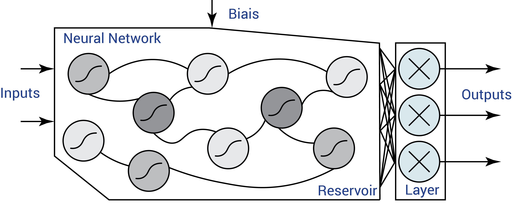
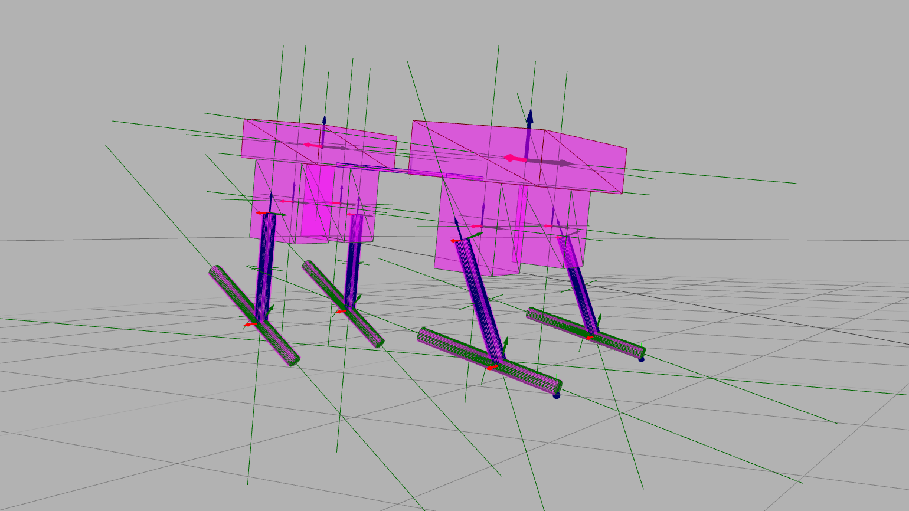

Bio-inspired compliant robot
In opposition to most of the classical robots, animals use tendon-driven actuators whose dynamical properties like stiffness or damping can be tuned in real-time depending on the usage and present unequaled performance in energy consumption and robustness. These properties are generally lacking in rigid robots though they proved to be highly important in the concept of morphological computation. Based on previous experience in quadruped robots (see projects like Oncilla or Reservoir dog), our lab has built Tigrillo, a new four-legged platform with the size of a cat to conduct diverse experiments in compliant robotics.
And Brain-inspired controllers
One of the goal in our experiments with this platform is to investigate how models described in neurosciences can perform on real robots. To that end, we are implementing Central Pattern Generators (CPGs) using Liquid State Machines (architectures of spiking neural networks included in to the concept of reservoir computing). CPGs are biological neural networks situated in the spinal cord of many animal from lamprey to human. Using the oscillatory properties of coupled neuronal populations, they can produce a set of periodic signals with a complex shape and synchronized together. We equipped the robot with an embedded SpiNNaker Spin3 board to simulate these neural networks in real time. Emphasis is also applied on the transfer learning from Artificial Neural Networks to Spiking Neural Networks.
 An example of a reservoir computing architecture using analog neurons with a sigmoid activation function. Only one single fully-connected output layer is trained to produced shaped periodic signals.{kind=link}
Trained in simulation to walk in the real world
Using a compliant robot controlled by spiking neural networks implies an increase of parameters but also complex moves that are hard to model explicitly. In this context, machine learning becomes the best solution to optimize a control policy. Beside a possible performance increase on energy and robustness, it provides a couple of benefits like enabling under- or over-actuated robots. Also, the direct coupling between body and brain can reduce computation by outsourcing it to the morphology dynamics and lead to more robust operations.
However, training such a policy is time-consuming and performing this learning phase on the real platform is not realistic. Using MuJoCo then Gazebo and the HBP Neurorobotics platform, a simulated quadruped model and its controller can learn to maximize traveled distance while keeping a low energy consumption. When it comes to transferring the policy to the physical hardware, significant progress have been made by adding regularization noise on the simulation physics but also on the robot morphology. In further work and publications, we will present those results and draw conclusions on their contribution and limits.
 A view of a morphology automatically generated in a python optimization script in the Gazebo simulator.{kind=link}